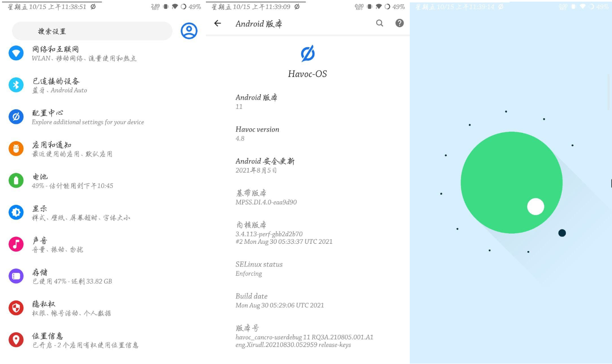
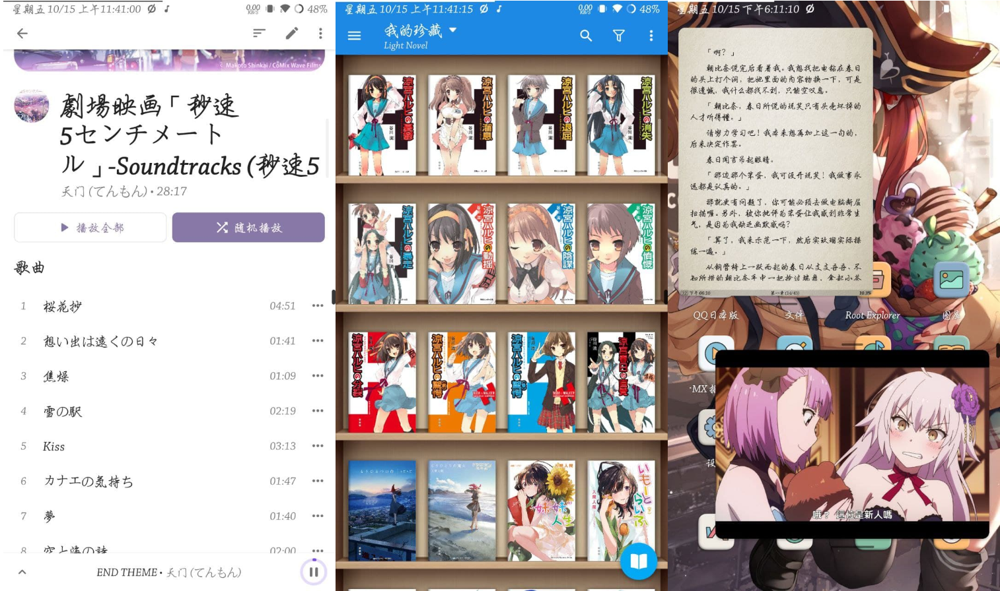
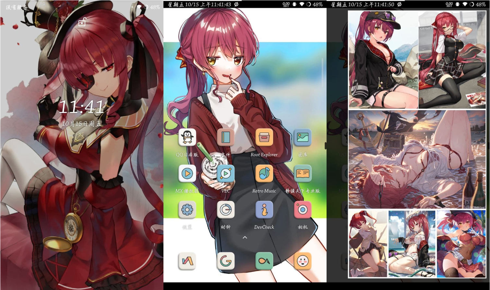
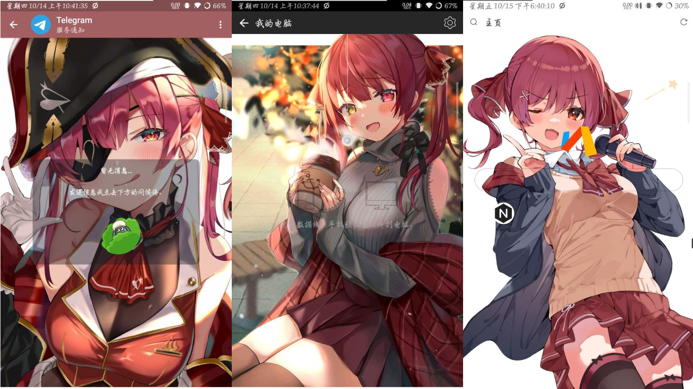

记录贴，非教程
前言
国庆放假前在某鱼收了台小米4，本打算趁着假期玩一玩，结果收到货时假期已过了一半。确认收货后第二天手机电池就出了问题，因为电压不稳导致手机无法开机，并一直在MI-黑屏-MI间反复横跳。与店家沟通后对方表示必须要寄回去确认手机问题非用户导致后才能发新机子。好家伙，等新手机邮到估计就半个月后了，于是京东又花了几乎是这台手机一半的价钱买了块新电池(＠￣ー￣＠)。从换完电池到现在已经过了一周多，每天换不同的rom体验，乐趣还是很大的，于是来记录一下。
选择小米4的原因是因为它————便宜，作为备用机很够用的3+64配置只需要130块左右（虽然加上电池快两百了），火龙801在即将到来的冬天也能带来不少温暖（。另外最主要的原因是因为，这机子生态太好了。作为一代刷机小王子，它没有bl锁，并有着非常多的刷机包，国内定制rom的miui、flyme，类原生的exThmUI、crDroidAndroid、dotOS、PixelExperience，lineageOS等等等等，甚至还能刷windows phone和ubuntu touch。当然，缺点也是有的，801这颗32位处理器已经跟不上时代了，在已经到来的安卓12里，谷歌停止了对32位应用的支持，所以小米4不会有安卓12及之后的rom了。但现有rom的量之大仍然不影响它的可玩性。
这里选择使用浩劫仅仅是因为目前正在使用。记得先在电脑上安装好小米4驱动。
刷入HavocOS，twrp及magisk
1、下载HavocOS4.8（tg频道下载，我没找到其他下载方式），twrp，magisk，gapps。
2、将这四个文件用数据线复制到手机储存中，电脑中保留twrp.img
3、电脑安装adb，手机进入bootloader，并用数据线连接
4、电脑打开cmd并输入指令：
adb devices
fastboot flash boot twrp.img的绝对位置
fastboot reboot
5、手机会进入twrp界面
6、按如下步骤操作：
三清—->刷入rom包—->刷入magisk—->刷入gapps—->刷入twrp镜像—->重启到系统
注：不需要谷歌框架的可以不刷入gapps
刷其他rom的只要将rom包换掉就好，操作流程都是一样的。
特别注意：
- 当系统是第三方rom且想刷另一个第三方rom时，不要直接刷入，要先退回最新版的miui，再按照这种方法刷入。
- 当系统是第三方rom且想升级该rom的新版本时，可直接刷入，但不可跨级刷入。如浩劫3.2升浩劫3.4可直接刷，但浩劫3.2升浩劫4.8则需要三清。
- 当系统降级时，需要三清。
使用全面屏手势
我先是按照rom包发送者给出的方法试了试：add qemu.hw.mainkeys=0 in /system/build.prop, and restart，果不其然卡米了…仔细想想我修改build.prop好像就没成功过（。之后选择刷入magisk模块：Fullscreen/Immersive Gestures(Q-S)，在magisk库中直接搜索就好，还是刷模块稳点（
应用推荐
小窗应用：米窗
视频播放器：MX播放器，VLC
音乐播放器：Retro Music
文本阅读器：静读天下
文件浏览器：MT管理器，Root Explorer
系统主题：flux white
备份工具：swift backup
压缩包工具：ZArchiver
垃圾清理：SD Maid
下载工具：idm+
其他：全局负一屏搭配KWGT使用有奇效
幸运破解器
一加桌面(magisk模块)
系统bug
- 全面屏手势无法使用侧滑手势
- 系统导航设置每次开机都会重置
- 打开某些应用时会卡住然后自动重启
- 安卓11彩蛋显示不完全（
- 其他暂未发现
截图
系统版本与不完全的安卓11彩蛋

推荐的阅读与播放器，以及感谢KindBrave大佬让我们能在类原生系统上用小窗

无处不在的我老婆与用全局负一屏+kwgt做的图墙


后续
2021.12.17
刷了不少系统最后选择了crDroid安卓10（买的valerie终于能用了），没什么bug，完美全面屏手势，还能使用人脸识别，而且比安卓11流畅多了（适合养老。要用谷歌套的话只能刷bitgapps，pico都会报70错误。硬要说的话就是耗电，充着电看视频一小时掉了5%emmm
习惯定制系统的可以试下flyme6，之前体验了下（，用着挺流畅而且没发现什么bug。但国内定制系统我始终用不惯emm，终究是变成了类原生的样子。